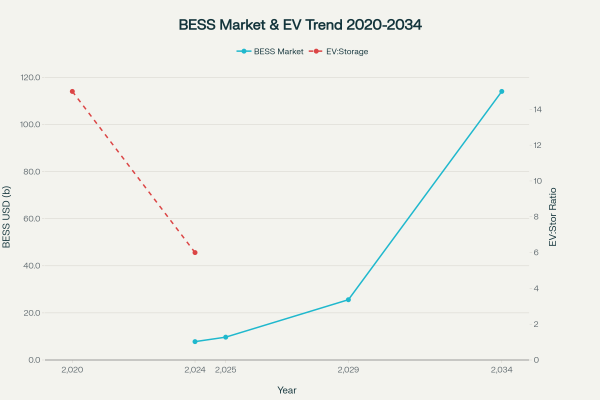
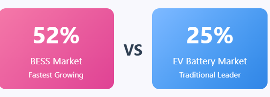
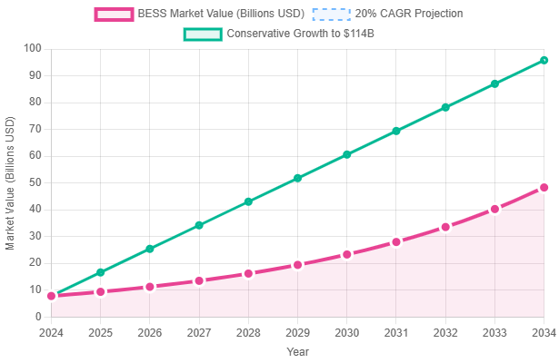
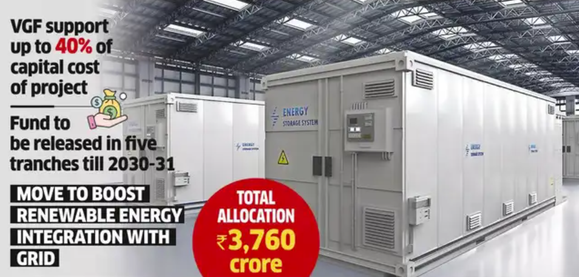
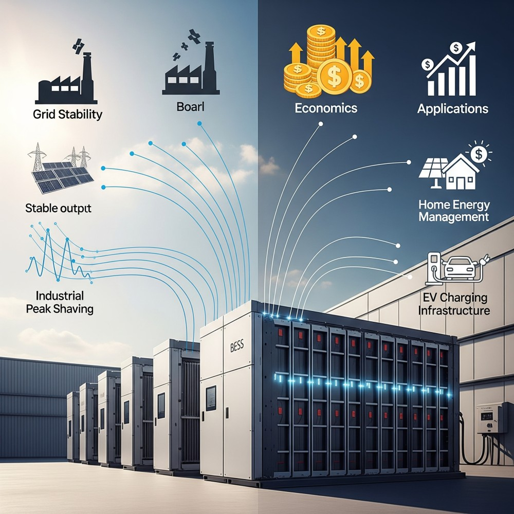
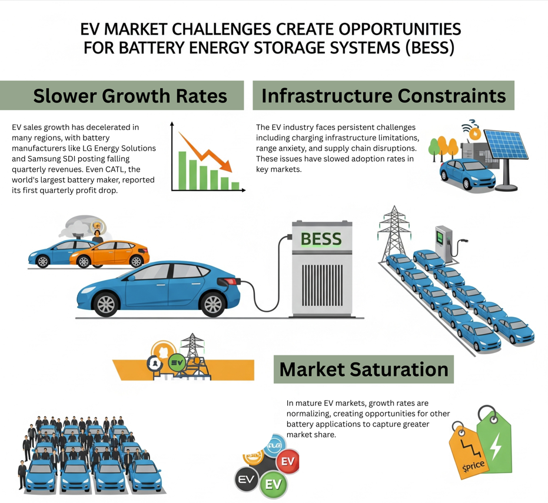
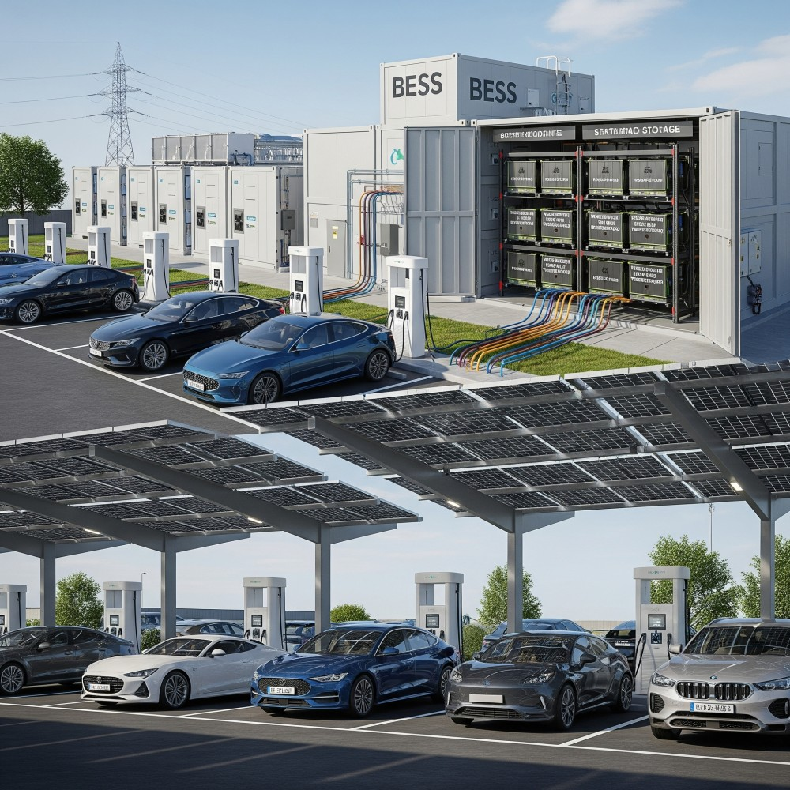

The energy storage revolution is quietly reshaping the battery industry landscape, with Battery Energy Storage Systems (BESS) emerging as the fastest-growing segment in the global battery market. While electric vehicles (EVs) dominated headlines for over a decade, a new narrative is unfolding where stationary energy storage is capturing unprecedented attention from investors, policymakers, and industry leaders. BESS Market Growth vs EV Battery Demand Dynamics (2020-2034)BESS Market Growth vs EV Battery Demand Dynamics (2020-2034)

The Numbers Don't Lie: BESS Outpaces EV Growth
The data reveals a dramatic shift in battery market dynamics. BESS has been the fastest-growing battery demand market globally for three consecutive years. In 2024, the BESS market grew by an impressive 52% compared to 25% growth in the EV battery market. This represents a fundamental change from the traditional EV-dominated battery landscape.

The global BESS market has experienced explosive growth, expanding from $7.8 billion in 2024 to a projected $114.05 billion by 2034, representing a compound annual growth rate (CAGR) of nearly 20%. Various market analyses project even higher growth rates, with some forecasting CAGRs of 26.9% to 32.69% depending on market segments and regional focus.

Changing Market Share Dynamics
Perhaps most telling is the shift in battery demand allocation. BESS now accounts for 13% of total global battery demand in 2024, up from just 6% in 2020. The ratio of EV battery demand to stationary battery demand has dramatically compressed from 15-to-1 in 2020 to 6-to-1 in 2024, indicating that stationary storage is becoming a material component of the global battery ecosystem.
This trend is particularly evident in markets like China, where energy storage applications overtook consumer electronics as the second-largest application for battery production in 2024. The Chinese market exemplifies this shift, with the country accounting for approximately two-thirds of installed BESS capacity globally.
Investment Patterns Reflect the Shift
The investment landscape tells a compelling story of BESS gaining financial prominence. Total funding for energy storage reached $17.6 billion in the first nine months of 2024, representing a 15% increase. While venture capital funding for energy storage companies decreased by 69% to $2.7 billion, this was offset by a massive 125% surge in debt and public market financing to $15 billion.

Government support has been particularly robust, with India's Viability Gap Funding (VGF) scheme providing $1.1 billion for BESS development, and the scheme recently expanded to support an additional 30GWh of projects with $631.5 million in funding. The Indian government expects this to attract $33 billion in private investment.
The Software Revolution Within BESS
A particularly interesting development is the emergence of BESS software as a high-value investment category. The BESS software market is projected to reach $150 billion by 2030, with venture capital firms increasingly looking beyond hardware to the growing software layer. Soft costs now account for over 40% of BESS unit expenses, making software solutions essential for optimizing operations and maximizing returns.
Why BESS is Capturing Attention
Several factors explain BESS's remarkable ascent:
- Grid Stability Requirements: As renewable energy penetration increases globally, BESS provides critical grid stabilization services. The technology addresses the intermittency challenges of solar and wind power, making renewables more viable and reliable.
- Economic Viability: Battery costs have declined by around 80% over the past decade, making BESS projects economically attractive. In India, merchant BESS operations turned profitable for the first time in 2024, with new projects potentially delivering 17% internal rates of return.
- Policy Support: Governments worldwide are implementing supportive frameworks. Europe added 21.9 GWh of BESS capacity in 2024, while the US BESS market delivered 60% growth in 2024, rising from 6 GW to 10 GW of installations.
- Diverse Applications: Unlike EVs, which serve primarily transportation needs, BESS offers multiple value streams including energy arbitrage, frequency regulation, peak shaving, and backup power.

EV Market Challenges Creating Opportunities for BESS
While the EV market continues growing, it faces several headwinds that have created space for BESS to shine:
Slower Growth Rates: EV sales growth has decelerated in many regions, with battery manufacturers like LG Energy Solutions and Samsung SDI posting falling quarterly revenues. Even CATL, the world's largest battery maker, reported its first quarterly profit drop.
Infrastructure Constraints: The EV industry faces persistent challenges including charging infrastructure limitations, range anxiety, and supply chain disruptions. These issues have slowed adoption rates in key markets.
Market Saturation Concerns: In mature EV markets, growth rates are normalizing, creating opportunities for other battery applications to capture greater market share.

Regional Variations and Opportunities
The BESS boom is not uniform globally. China leads with 215.5 GWh of installed capacity and an ambitious 505.6 GWh project pipeline. The US follows with 82.1 GWh installed and 162.5 GWh planned.
Emerging markets show particularly strong growth potential. Canada is projected to be the fastest-growing BESS market through 2027, with capacity increasing from 0.3 GWh to 18.3 GWh. Saudi Arabia's capacity could increase 24-fold to reach 32.4 GWh.
The Symbiotic Relationship
Rather than viewing BESS and EVs as competitors, the reality is more nuanced. The growth of EV adoption is actually creating demand for BESS solutions, particularly in charging infrastructure. EV charging stations increasingly rely on BESS for peak shaving, load management, and cost optimization.

Moreover, second-life EV batteries are finding new applications in BESS installations, creating a circular economy that benefits both sectors. Used EV batteries still maintain 70-80% of their capacity, making them suitable for stationary storage applications.
Looking Ahead: A New Energy Storage Era
The evidence suggests that BESS hasn't simply stolen the spotlight from EVs—it has earned it through exceptional growth, compelling economics, and critical infrastructure value. Global energy storage installations are expected to rise 61% in 2025, while annual battery storage installations are predicted to exceed 400 GWh by 2030.
The energy storage market is projected to grow to $5.12 trillion at a CAGR of 21.7% by 2034, representing nearly seven times its current value. This growth trajectory positions BESS as not just a supporting technology for renewables, but as a fundamental pillar of the future energy system.